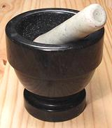
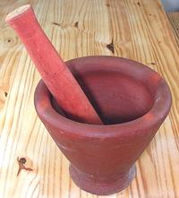
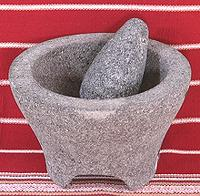
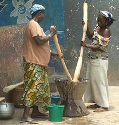
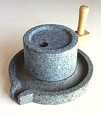

SAFARI
Users
Types of Mortar & Pestle
Thai Green Granite Mortar

Back before the Wall Street Journal was bought by Murdock and turned into a propaganda rag for the 1%, it had articles relevant to real people. They even occasionally had comparative reviews of kitchen equipment. The reviewers, however, were a bit weak in the wrists, to the extent they marked down the wonderful Oxo salad spinner for not being motorized.
So then, why in the world did these wimpy reviewers select as "Number 1" this 11 pound green granite Thai monster mortar with its massive 3 pound pestle? Could it be just because it was the only one in their test suite that worked? Others were found much less effective, but "innovative" and "gourmet" models performed particularly poorly.
Fortunately, I already had a Thai mortar, having come to the same conclusion years ahead of them. The bowl is 5-1/2 inches inside and 4 inches deep, holding 6 cups (1-1/2 quarts).
One Thai chef reports having flown to America with his granite mortar
on his lap the whole way to make sure it didn't get lost. A teacher of
Thai cooking reports her students rush out after their first class to buy
their own. But it's not just for Thai cuisine, it works just as well
for just about every other cuisine in the world.
Marble Mortar & Pestle

This is the minimum mortar that's really useful. It weighs a mere 5 pounds 5 ounces with a bowl 3-3/4 inches wide and 2-3/4 inches deep holding 2 cups. Trouble is, the pestle that comes with many of these is laughably inadequate and no amount of blue pills will help. I had a sufficient stoneware pestle made by a local ceramicist.
A mortar in this class is a kitchen essential for any cuisine. Mine sits
on the window sill over my kitchen counter, ready for instant use for minor
grinding and smashing tasks not sufficiently demanding to require the Thai
monster.
Kruk
 [Kruk, Kluek (Thai); Cloke & Sok (Laos)]
This fired clay mortar with it's wooden pestle is used in Issan (northeastern Thailand) and Laos to make the famous Green Papaya Salad and similar preparations. It is used very differently from the Thai granite mortar. Strips of green papaya, long beans and other vegetables are lightly bruised so they absorb dressing but are still fairly crisp and intact. A special technique is used. The pestle strikes at an angle near the top of the contents so the bruising can be precisely controled. A spoon is used to continuously bring ingredients up from the bottom to where the pestle strikes.
These are inexpensive in Asian markets here in Los Angeles. The photo
specimen, 6-3/4 inches across the opening and 7 inches deep, cost 2016
US $12, including the pestle, traditionally made of palm wood. It is a
little large for a modest size salad, so I also have one about 6-1/4
inches across the opening and 6 inches deep, which cost $11.
Molcajete & Tejolote

Made from gray volcanic stone, this Mexican mortar and pestle is often
used to make salsas, for which its coarse texture is a great advantage.
It's probably a little too coarse for some mortar and pestle tasks in
other cuisines. The photo specimen has a bowl 6 inches wide and 2-1/2
inches deep. The bowl weighs 7 pounds and the peltel weighs 1-1/4 pounds.
The bowl holds 3-1/2 cups of liquid. Note that the stone is so porous
water will slowly seep through it, but generally only solids or
semi-solids will be ground in it. Best to clean it with a stiff bristle
brush to remove stuff from the pores.
Africa

In most of Sub-Saharan Africa, mashes (fufu) are the main dish, as rice
is in Asia. These mashes need to be made in large quantity, so a very
large mortar made from a tree trunk, preferably a mango tree, is used.
It is operated standing up, using a very long pestle, often by two
people, each with a pestle.
Photo by PGskot distributed under licene Creative Commons
Attribution-ShareAlike v4.0 International.
Using a Mortar & pestle
I recently read advice in a food article saying, "don't pound with the pestle, use a circular motion". Yeah, right. If you're doing much more than grinding a few peppercorns that's going to make a wreck of your wrist in short order.
Pounding in a mortar is so important in some cultures that a young woman's readiness for marriage is judged by the pace and rhythm of her pounding.
- When doing serious pounding you should place the base of your mortar on a shock absorbing pad. A folded towel or potholder will do. This will prevent cracks in your counters and things being shaken down.
- Pound relatively small amounts at a time, this will get the job done faster.
- When making pastes, start with the toughest ingredients, adding the next ingredient when the desired texture has been achieved. Finish with sticky ingredients like garlic.
- When making pastes, always chop ingredients as fine as you can before adding them to the mortar. This saves a lot of time and work.
- Mortar and pestle work is best assigned to the males of the household, who, besides being stronger, are well practiced in the appropriate stroke and rhythm.
Grinding Stones
For stones used to sharpen knives and other tools, see Sharpening Stones.
Metate y Mano
- [Licuadora Azteca (Aztec Blender)]
Unlike the Mortar & Pestle, the Metate y Mano can be used to grind
relatively large amounts of seeds into flour. This device has been used in
various forms worldwide since the far depths of prehistory. In Mexico it's
still used in the villages to grind corn into flour, as well as grinding
chilis, cacao and other ingredients for mole (sauces). It is not generally
needed in our kitchens because flour can be purchased ready ground and most
other sauce ingredients can be ground in a food processor and/or spice
grinder. A very similar device, the Sil and Batta, is used in India for
similar purposes, but the "mano" is flat and triangular in shape.
Photo by Jim Conrad contributed to the public domain.
Stone Mill

Millstones were introduced to China through trade with the Roman Empire,
raising the status of wheat from despised grain to a favorite of the
Imperial Court. Small hand mills are still made in China, used mostly for
grinding grains, seeds and beans for dessert pastes. The mill in the photo
is occasionally available from The Wok
Shop in San Francisco. Very similar but larger mills called
Chakki are used in India by women who go from door to door
grinding a week's spices for households.
© source.